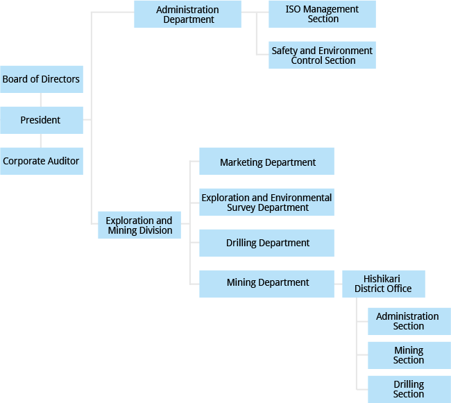

-
Corporate NameSumiko Resources Exploration & Development Co.,Ltd.
-
Address of Head Office8-21, Toranomon 3-Chome, Minato-Ku, Tokyo, Japan
-
Year of FoundationAugust 1st, 1963
-
Paid-up capital8 million yen
-
RepresentativeKazuya Okada, Dr.Eng.
-
Shareholder
-
Board of Directors
President Kazuya Okada Directors Akihiko Chiba Masanori Fujisawa Katsunori Suzuki Audit & Supervisory Board Member Hiroaki Tokushige -
Number of Employees101 people
-
Our BanksSumitomo Mitsui Banking Corporation
The Bank of Tokyo-Mitsubishi UFJ, Ltd . -
Permits, licenses, and registrations
Geological surveyor registration Minister of Land, Infrastructure and Transport registration Shitsu-24 No. 146 Surveyor registration Minister of Land, Infrastructure and Transport registration No. (14)-741 Contractor's license Minister of Land, Infrastructure and Transport permit (Toku-27) No. 4335 Civil engineering construction Scaffold/construction work Well drilling work Construction consultant registration Minister of Land, Infrastructure and Transport registration Ken-25 No. 10019 Geology Soil and foundation
History
-
August 1963"Sumiko Consultant Co., Ltd." is established.
Aims to be general consultant based on technology possessed in mining and civil engineering fields.
Takeo Iwasawa installed as first president. Operations start with 7 personnel. -
September 1986Headquarters move to Shinjuku Ward due to increase in personnel with business growth.
-
August 2001Headquarters move from Shinjuku Ward to Ikenohata in Taito Ward.
-
April 2002Takes charge of Hishikari-related business of Sumiko Development and Construction Co., Ltd.
-
October 2010Due to corporate split-up, Chi-ken Sogo Consultants Co., Ltd.takes over construction consultation operations.
-
November 2010Company name changes to "Sumiko Resources Exploration & Development Co., Ltd."
-
May 2013Headquarters move from Ikenohata, Taito Ward, to Toranomon, Minato Ward.
-
August 2013Company commemorates 50th anniversary.
Organizational chart
